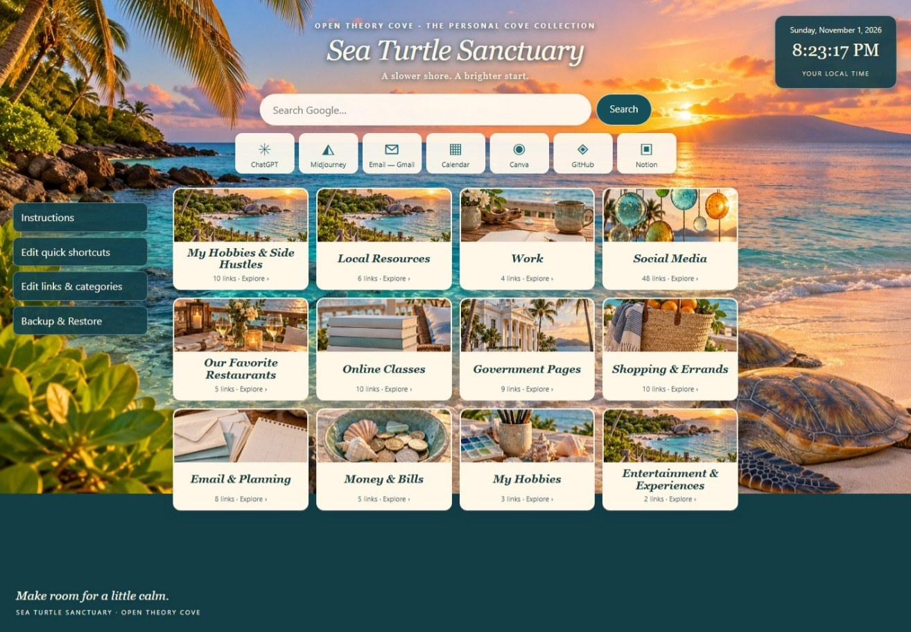

OPEN THEORY COVE · DIGITAL BROWSER HOME PAGE
Sea Turtle Sanctuary
A slower shore. A brighter start.


A calmer place to start your day
Turn your browser’s Home button into a tropical, useful space for the websites you use most. Keep home resources, work, hobbies, classes, social media, restaurants, and everyday essentials together.
Make it your own
- 12 starter categories and 120 general links, ready to personalize.
- Add, edit, rename, reorder, or remove categories.
- Add and edit website shortcuts, descriptions, and icons.
- Centered Google search and quick links to familiar tools.
- Live date and clock using your computer’s local time.
- Download and restore backups of your categories and links.
What’s inside the ZIP
- Self-contained HTML start page with all artwork embedded.
- Read Me First HTML guide with Chrome, Edge, and Firefox Home-button instructions.
- Quick-start text guide.
Simple setup. No coding.
- Unzip the package into your preferred folder.
- Open the HTML file in your desktop browser.
- Follow the guide to set that file as your browser’s Home page.
- Add your own favorite websites and save a backup.
View this product at Open Theory Cove ↗
Good to know
The page and artwork open offline. Visiting websites and searching Google require internet access. Your edits save in your browser, not inside the HTML file; use Backup & Restore before moving the page or changing computers. After moving it, update the Home-button file address.
Designed for desktop browsers. Managed computers may restrict local home pages. This changes the Home-button destination; it does not automatically replace the New Tab page. No weather feed, subscriptions, or installation required.